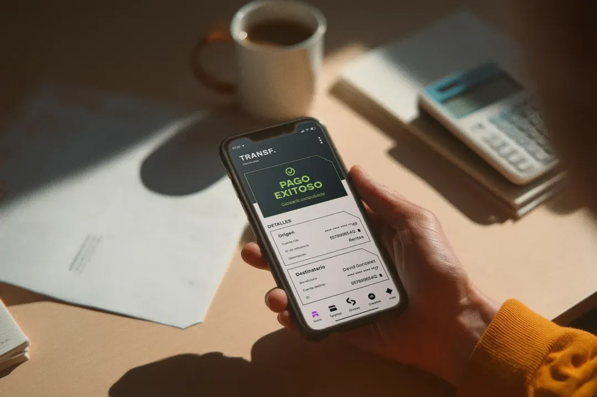

5 hábitos financieros que cambiarán tu vida en 2026
Aprende los hábitos que practican las personas financieramente exitosas y cómo implementarlos en tu vida diaria.
Descubre consejos financieros, noticias del sector bancario y las últimas actualizaciones de N58 Banco Digital. Mantente informado y toma mejores decisiones.
Destacado
Descubre las nuevas características que transformarán tu experiencia bancaria: pagos instantáneos, análisis de gastos con IA y mucho más.
15 Enero 2026 · 8 min lectura
Aprende los hábitos que practican las personas financieramente exitosas y cómo implementarlos en tu vida diaria.

Desde pagos biométricos hasta criptomonedas, exploramos las tecnologías que están revolucionando las transacciones.
Consejos prácticos para mantener tu dinero seguro y evitar caer en estafas comunes en el mundo digital.
Por qué necesitas un fondo de emergencia, cuánto deberías ahorrar y cómo empezar desde cero.
Celebramos este importante hito y compartimos nuestra visión para seguir creciendo junto a ti.
Métodos probados para crear y mantener un presupuesto personal sin sentir que te estás privando de todo.